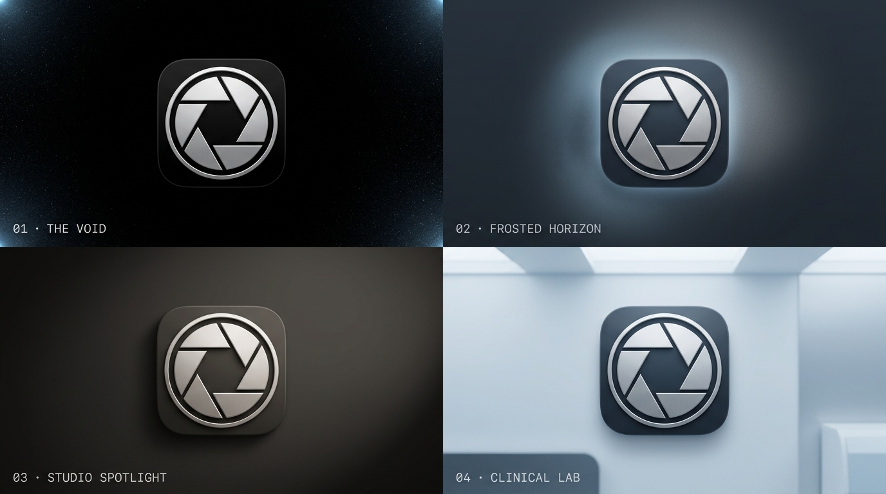

6 variantes vectoriales en formato SVG estándar (100×100) desarrolladas bajo el estilo de diafragma fotográfico, fusionando la óptica de smartphone con el antibiograma microbiológico.
La curvatura de la letra D abraza directamente el tambor de un lente óptico con 6 láminas de obturador y pupila central de calibración.
8 láminas curvadas en espiral continua (estilo Leica/Hasselblad) con plano focal izquierdo que insinúa el asta de la letra D.
Apertura fotográfica que deja visible la zona de inhibición concéntrica y el disco de papel central de 6 mm del antibiograma.
Combina las palas del diafragma con ejes ortogonales de mira y marcas de subdivisión métrica de calibre digital.
Minimalismo arquitectónico de masas sólidas donde las palas del obturador delinean la silueta de la D por espacio negativo.
Diafragma concéntrico enmarcado por un anillo de 12 puntos de referencia fiducial estilo objetivo Zeiss/Leica de microbiología.
Renderizado en 4 atmósferas de referencia: The Void, Frosted Horizon, Studio Spotlight y Clinical Lab.
